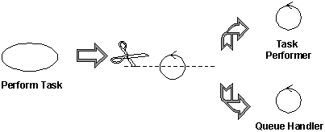

|
Analysis classes may be stereotyped as one of the following:
-
Boundary classes
-
Control classes
-
Entity classes
Apart from giving you more specific process guidance when finding classes, this stereotyping results in a robust object
model because changes to the model tend to affect only a specific area. Changes in the user interface, for example,
will affect only boundary classes. Changes in the control flow will affect only control classes. Changes in long-term
information will affect only entity classes. However, these stereotypes are specially useful in helping you to identify
classes in analysis and early design. You should probably consider using a slightly different set of stereotypes in
later phases of design to better correlate to the implementation environment, the application type, and so on.
A boundary class is a class used to model interaction between the system's surroundings and its inner workings.
Such interaction involves transforming and translating events and noting changes in the system presentation (such as
the interface).
Boundary classes model the parts of the system that depend on its surroundings. Entity classes and control classes
model the parts that are independent of the system's surroundings. Thus, changing the GUI or communication protocol
should mean changing only the boundary classes, not the entity and control classes.
Boundary classes also make it easier to understand the system because they clarify the system's boundaries. They aid
design by providing a good point of departure for identifying related services. For example, if you identify a printer
interface early in the design, you will soon see that you must also model the formatting of printouts.
Common boundary classes include windows, communication protocols, printer interfaces, sensors, and terminals. You do
not have to model routine interface parts, such as buttons, as separate boundary classes. Generally the entire window
is the finest grained boundary object. Boundary classes are also useful for capturing interfaces to possibly nonobject
oriented API's, such as legacy code.
You should model boundary classes according to what kind of boundary they represent. Communication with another system
and communication with a human actor (through a user interface) have very different objectives. For communication with
a human actor, the most important concern is how the interface will be presented to the user. For communication with
another system, the most important concern is the communication protocol.
A boundary object (an instance of a boundary class) can outlive a use case instance if, for example, it must appear on
a screen between the performance of two use cases. Normally, however, boundary objects live only as long as the use
case instance.
Finding boundary classes
A boundary class intermediates the interface to something outside the system. Boundary objects insulate the system from
changes in the surroundings (changes in interfaces to other systems, changes in user requirements, etc.), keeping these
changes from affecting the rest of the system.
A system may have several types of boundary classes:
-
User interface classes - classes which intermediate communication with human users of the system
-
System interface classes - classes which intermediate communication with other system
-
Device interface classes - classes which provide the interface to devices (such as sensors), which detect
external events
Find user-interface classes
Define one boundary class for each use-case actor-pair. This class can be viewed as having responsibility for
coordinating the interaction with the actor. You may also define additional boundary classes to represent
subsidiary classes to which the primary boundary class delegates some of its responsibilities. This is
particularly true for window-based GUI applications, where you may model one boundary object for each window, or one
for each form. Only model the key abstractions of the system; do not model every button, list and widget in the GUI.
The goal of analysis is to form a good picture of how the system is composed, not to design every last detail. In other
words, identify boundary classes only for phenomena in the system or for things mentioned in the flow of events
of the analysis use-case realization.
Make sketches, or use screen dumps from a User-Interface Prototype, that illustrate the behavior and appearance
of the boundary classes.
Find system-interface classes
A boundary class which communicates with an external system is responsible for managing the dialogue with the external
system; it provides the interface to that system for the system being built.
Example
In an Automated Teller Machine, withdrawal of funds must be verified through the ATM Network, an actor (which in turn
verifies the withdrawal with the bank accounting system). An object called ATM Network Interface can be identified to
provide communication with the ATM Network.
The interface to an existing system may already be well-defined; if it is, the responsibilities should be derived
directly from the interface definition. If a formal interface definition exists, it may be reverse engineered and we
need not formally define it here; simply make note of the fact that the existing interface will be reused during
design.
Find device interface classes
The system may contain elements that act as if they were external (change value spontaneously without any object in the
system affecting them), such as sensor equipment. Although it is possible to represent this type of external device
using actors, users of the system may find doing so "confusing", as it tends to put devices and human actors on the
same "level." Once we move away from gathering requirements, however, we need to consider the source for all external
events and make sure we have a way for the system to detect these events.
If the device is represented as an actor in the use-case model, it is easy to justify using a boundary class to
intermediate communication between the device and the system. If the use-case model does not include these
"device-actors", now is the appropriate time to add them, updating the Supplementary Descriptions of the Use Cases
where appropriate.
For each "device-actor", create a boundary class to capture the responsibilities of the device or sensor. If there is a
well-defined interface already existing for the device, make note of it for later reference during design.
A control class is a class used to model control behavior specific to one or a few use cases. Control objects
(instances of control classes) often control other objects, so their behavior is of the coordinating type. Control
classes encapsulate use-case specific behavior.
The behavior of a control object is closely related to the realization of a specific use case. In many scenarios, you
might even say that the control objects "run" the analysis use-case realizations. However, some control objects can
participate in more than one analysis use-case realization if the use-case tasks are strongly related. Furthermore,
several control objects of different control classes can participate in one use case. Not all use cases require a
control object. For example, if the flow of events in a use case is related to one entity object, a boundary object may
realize the use case in cooperation with the entity object. You can start by identifying one control class per analysis
use-case realization, and then refine this as more analysis use-case realizations are identified and commonality is
discovered.
Control classes can contribute to understanding the system because they represent the dynamics of the system, handling
the main tasks and control flows.
When the system performs the use case, a control object is created. Control objects usually die when their
corresponding use case has been performed.
Note that a control class does not handle everything required in a use case. Instead, it coordinates the tasks
of other objects that implement the functionality. The control class delegates work to the objects that have been
assigned the responsibility for the functionality.
Finding control classes
Control classes provide coordinating behavior in the system. The system can perform some use cases without control
objects (just using entity and boundary objects)-particularly use cases that involve only the simple manipulation of
stored information.
More complex use cases generally require one or more control classes to coordinate the behavior of other objects in the
system. Examples of control objects include programs such as transaction managers, resource coordinators, and error
handlers.
Control classes effectively de-couple boundary and entity objects from one another, making the system more tolerant of
changes in the system boundary. They also de-couple the use-case specific behavior from the entity objects, making them
more reusable across use cases and systems.
Control classes provide behavior that:
-
Is surroundings-independent (does not change when the surroundings change),
-
Defines control logic (order between events) and transactions within a use case.
-
Changes little if the internal structure or behavior of the entity classes changes,
-
Uses or sets the contents of several entity classes, and therefore needs to coordinate the behavior of these entity
classes.
-
Is not performed in the same way every time it is activated (flow of events features several states).
Determine whether a control class is needed
The flow of events of a use case defines the order in which different tasks are performed. Start by investigating if
the flow can be handled by the already identified boundary and entity classes. For simple flows of events which
primarily enter, retrieve and display, or modify information, a separate control class is not usually justified; the
boundary classes will be responsible for coordinating the use case.
The flows of events should be encapsulated in a separate control class when it is complex and consists of
dynamic behavior that may change independently from the interfaces (boundary classes) or information stores (entity
classes) of the system. By encapsulating the flows of events, the same control class can potentially be re-used
for a variety of systems which may have different interfaces and different information stores (or at least the
underlying data structures).
Example: managing a queue of tasks
You can identify a control class from the use case Perform Task in the Depot-Handling System. This control class
handles a queue of Tasks, ensuring that Tasks are performed in the right order. It performs the next Task in the queue
as soon as suitable transportation equipment is allocated. The system can therefore perform several Tasks at the same
time.
The behavior defined by the corresponding control object is easier to describe if you split it into two control
classes, Task Performer and Queue Handler. A Queue Handler object will handle only the queue order and the allocation
of transportation equipment. One Queue Handler object is needed for the whole queue. As soon as the system performs a
Task, it will create a new Task Performer object, which will perform the Task. We thus need one Task Performer object
for each Task the system performs.

Complex classes should be divided along lines of similar responsibilities
The principal benefit of this split is that we have separated queue handling responsibilities (something generic to
many use cases) from the specific tasks of task management, which are specific to this use case. This makes the classes
easier to understand and easier to adapt as the design matures. It also has benefits in balancing the load of the
system, as many Task Performers can be created as necessary to handle the workload.
Encapsulating the main flow of events and alternate/exceptional flows of events in separate control classes
To simplify changes, encapsulate the main flow of events and alternate flows of events in different control classes. If
alternate and exception flows are completely independent, separate them as well. This will make the system easier to
extend and maintain over time.
Divide control classes where two actors share the same control class
Control classes may also need to be divided when several actors use the same control class. By doing this, we isolate
changes in the requirements of one actor from the rest of the system. In cases where the cost of change is high or the
consequences dire, you should identify all control classes which are related to more than one actor and divide them. In
the ideal case, each control class should interact (via some boundary object) with one actor or none at all.
Example: call management
Consider the use case Local Call. Initially, we can identify a control class to manage the call itself.

The control class handling local phone calls in a telephone system can quickly be divided into two control classes,
A-behavior and B-behavior, one for each actor involved.
In a local phone call, there are two actors: A-subscriber who initiates the call, and B-subscriber who
receives the call. The A-subscriber lifts the receiver, hears the dial tone, and then dials a number of digits,
which the system stores and analyzes. When the system has received all the digits, it sends a ringing tone to
A-subscriber, and a ringing signal to B-subscriber. When B-subscriber answers, the tone and the
signal stop, and the conversation between the subscribers can begin. The call is finished when both subscribers hang
up.
Two behaviors must be controlled: What happens at A-subscriber's place and what happens at B-subscriber's place. For
this reason, the original control object was split into two control objects, A-behavior and B-behavior.
You do not have to divide a control class if:
-
You can be reasonably sure that the behavior of the actors related to the objects of the control class will never
change, or change very little.
-
The behavior of an object of the control class toward one actor is very insignificant compared with its behavior
toward another actor, a single object can hold all the behavior. Combining behavior in this way will have a
negligible effect on changeability.
An entity class is a class used to model information and associated behavior that must be stored. Entity objects
(instances of entity classes) are used to hold and update information about some phenomenon, such as an event, a
person, or some real-life object. They are usually persistent, having attributes and relationships needed for a long
period, sometimes for the life of the system.
An entity object is usually not specific to one analysis use-case realization; sometimes, an entity object is not even
specific to the system itself. The values of its attributes and relationships are often given by an actor. An entity
object may also be needed to help perform internal system tasks. Entity objects can have behavior as complicated as
that of other object stereotypes. However, unlike other objects, this behavior is strongly related to the phenomenon
the entity object represents. Entity objects are independent of the environment (the actors).
Entity objects represent the key concepts of the system being developed. Typical examples of entity classes in a
banking system are Account and Customer. In a network-handling system, examples are Node and
Link.
If the phenomenon you wish to model is not used by any other class, you can model it as an attribute of an entity
class, or even as a relationship between entity classes. On the other hand, if the phenomenon is used by any other
class in the design model, you must model it as a class.
Entity classes provide another point of view from which to understand the system because they show the logical data
structure, which can help you understand what the system is supposed to offer its users.
Finding entity classes
Entity classes represent stores of information in the system; they are typically used to represent the key concepts the
system manages. Entity objects are frequently passive and persistent. Their main responsibilities are to store and
manage information in the system.
A frequent source of inspiration for entity classes are the Glossary (developed during requirements) and a
business-domain model (developed during business modeling, if business modeling has been performed).
The following are allowable:
-
Communicate associations between two Boundary classes, for instance, to describe how a specific window is related
to other boundary objects.
-
Communicate or subscribe associations from a Boundary class to an Entity class, because boundary objects might need
to keep track of certain entity objects between actions in the boundary object, or be informed of state changes in
the entity object.
-
Communicate associations from a Boundary class to a Control class, so that a boundary object may trigger particular
behavior.
The following are allowable:
-
Communicate or subscribe associations between Control classes and Entity classes, because control objects might
need to keep track of certain entity objects between actions in the control object, or be informed of state changes
in the entity object.
-
Communicate associations between Control and Boundary classes, allowing the results of invoked behavior to be
communicated to the environment.
-
Communicate associations between Control classes, allowing the construction of more complex behavioral patterns.
Entity classes should only be the source of associations (communicate or subscribe) to other entity classes. Entity
class objects tend to be long-lived; control and boundary class objects tend to be short-lived. It is sensible from an
architectural viewpoint to limit the visibility that an entity object has of its surroundings, that way, the system is
more amenable to change.
FromTo
(navigability)
|
Boundary
|
Entity
|
Control
|
|
Boundary
|
communicate
|
communicate
subscribe
|
communicate
|
|
Entity
|
|
communicate
subscribe
|
|
|
Control
|
communicate
|
communicate
subscribe
|
communicate
|
Valid Association Stereotype Combinations
-
When a new behavior is identified, check to see if there is an existing class that has similar responsibilities,
reusing classes where possible. Only when sure that there is not an existing object that can perform the behavior
should you create new classes.
-
As classes are identified, examine them to ensure they have consistent responsibilities. When classes
responsibilities are disjoint, split the object into two or more classes. Update the interaction diagrams
accordingly.
-
If the a class is split because disjoint responsibilities are discovered, examine the collaborations in which the
class plays a role to see if the collaboration needs to be updated. Update the collaboration if needed.
-
A class with only one responsibility is not a problem, per se, but it should raise questions on why it is needed.
Be prepared to challenge and justify the existence of all classes.
|